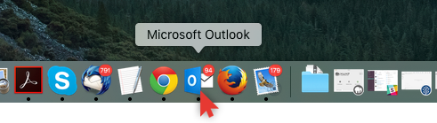
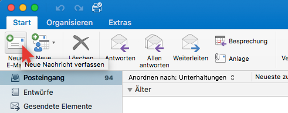
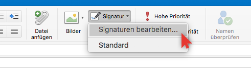
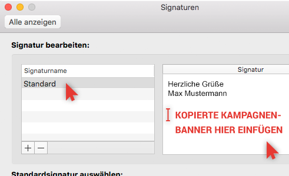
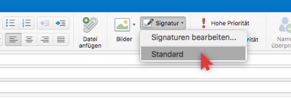
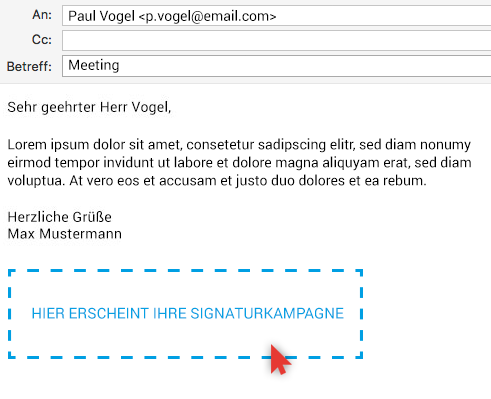

<p class="zeitaufwand" translate="Uniquetimeabout3minutes"></p>
<!--<p  class="schrift_blau text-bold">SCHRITT 1</p>
 <div class="explain-step-text">Kopieren Sie den Kampagnenbanner auf der rechten Seite.</div>-->
 
 
 
  <p  class="schrift_blau text-bold" translate="STEP1"></p>
 <div class="explain-step-text" translate="OpenMicrosoftoutlook"></div>
 
 <div class="explain-step-text" translate="AndleftofNewMail"></div>
 
 
 <p  class="schrift_blau text-bold" translate="STEP2"></p>
 <div class="explain-step-text" translate="Thisopenssignaturesedit"></div>
 
 
 
 
 <p  class="schrift_blau text-bold" translate="STEP3"></p>
 <div class="explain-step-text" translate="ThisopenstheToinserthavepointabout"></div>
  <div class="explain-step-text" translate="CopytheMailtasticsignatureblueButtonstotheclipboard"></div>
 
 <button ng-click="selectSignature('preview')" class="ownbtn btnblau btn-lg installationcopybutton" translate="MailtasticCampaignBannertoclipboard"></button>
 
   <div class="explain-step-text" translate="UnlessMailtasticsignatureemptybox"></div>
 
 
   <div class="explain-step-text" translate="Unlessyoucampaignexistingsignaturetext"></div>
 
 
 
 
 
 <p  class="schrift_blau text-bold" translate="STEP4"></p>
 <div class="explain-step-text" translate="Closedialogboxcorrespondingsignaturfrom"></div>
 
 <div class="explain-step-text" translate="AndtheMailtasticsignatureortheyoursignaturedisplayed"></div>
 
 